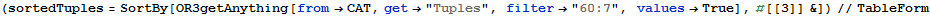
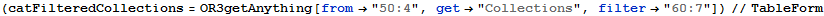

OrientR3S3 - Filtering on SupplierPartCatalog
Get the Supplier with the Minimum Catalog Price for a Part
Initialize
Find References for Entities, Attributes and Items
Get Model
Get Entities
Find Part Item that has prtID=998
From the Model Find prtID Collection
From prtID Collection Find Datum with the Value 998
Solution 1
Filter and SortBy Catalog Tuples
Filter with prtID=998 and SortBy catPrice

| 1082 | 998 | 7.95 | 200 | 03/03/2014 00:00:00 | FALSE |
| 1081 | 998 | 11.7 | 400 | 10/09/2014 00:00:00 | TRUE |
| 1083 | 998 | 12.5 | FALSE | ||
| 1084 | 998 | 48.6 | 200 | 20/12/2014 00:00:00 | TRUE |
Filter Part Tuples
With prtID=998
Filter Supplier Tuples
Catalog Tuple with the Minimum Price for prtID=998
With supID
Solution 2
Filter Catalog Collections
Filter with prtID=998

| #54:0 | #54:1 | #54:2 | #54:3 |
| #60:7 | |||
| #65:10 | #65:14 | #65:5 | #65:9 |
| #66:1 | #66:2 | ||
| #67:0 | #67:1 | #67:2 | |
| #68:0 | #68:1 |
| 1081 | 1082 | 1083 | 1084 |
| 998 | |||
| 12.5 | 48.6 | 11.7 | 7.95 |
| 400 | 200 | ||
| 20/12/2014 00:00:00 | 03/03/2014 00:00:00 | 10/09/2014 00:00:00 | |
| TRUE | FALSE |
Filter Catalog Tuples
Find Minimum Catalog Price for prtID=998
Catalog Tuple with the Minimum Price for prtID=998
Filter Supplier Tuples
With supID

Filter Part Tuples
With prtID=998
Projection